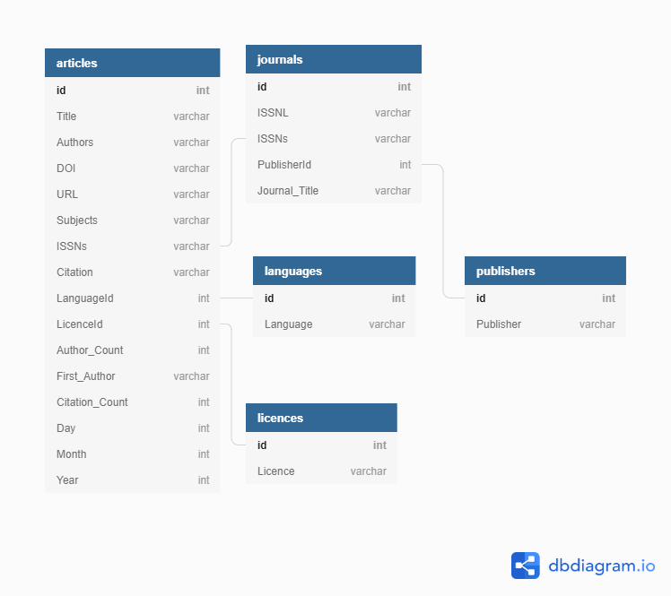

Content from Introduction to SQL
Last updated on 2023-05-02 | Edit this page
Overview
Questions
- What is SQL?
- Why is it significant?
- What is the relationship between a relational database and SQL?
Objectives
- Define a relational database.
- Explain what SQL is and why to use it.
- Identify library and information skills that relate to using SQL
What is SQL?
Structured Query Language, or SQL (sometimes pronounced “sequel”), is a powerful language used to interrogate and manipulate relational databases. It is not a general programming language that you can use to write an entire program. However, SQL queries can be called from programming languages to let any program interact with databases. There are several variants of SQL, but all support the same basic statements that we will be covering today.
Relational databases
Relational databases consist of one or more tables of data. These tables have fields (columns) and records (rows). Every field has a data type. Every value in the same field of each record has the same type. These tables can be linked to each other when a field in one table can be matched to a field in another table. SQL queries are the commands that let you look up data in a database or make calculations based on columns.
Why use SQL?
SQL is well established and has been around since the 1970s. It is still widely used in a variety of settings.
SQL lets you keep the data separate from the analysis. There is no risk of accidentally changing data when you are analysing it. If the data is updated, a saved query can be re-run to analyse the new data.
SQL is optimised for handling large amounts of data. Data types help quality control of entries - you will receive an error if you try to enter a word into a field that should contain a number. Understanding the nature of relational databases, and using SQL, will help you in using databases in programming languages such as R or Python.
Many web applications (including WordPress and ecommerce sites like Amazon) run on a SQL (relational) database. Understanding SQL is the first step in eventually building custom web applications that can serve data to users.
Database Management Systems
There are a number of different database management systems for working with relational data. We’re going to use SQLite today, but basically everything we teach you will apply to the other database systems as well (e.g., MySQL, PostgreSQL, MS Access, Filemaker Pro). The only things that will differ are the details of exactly how to import and export data and possibly some differences in datatype.
Introduction to DB Browser for SQLite
Let’s all open the database we downloaded via the setup in DB Browser for SQLite.
You can see the tables in the database by looking at the left hand side of the screen under Tables.
To see the contents of a table, click on that table and then click on the Browse Data tab above the table data.
If we want to write a query, we click on the Execute SQL tab.
There are two ways to add new data to a table without writing SQL:
- Enter data into a CSV file and append
- Click the “Browse Data” tab, then click the “New Record” button.
The steps for adding data from a CSV file are:
- Choose “File” > “Import” > “Table” from CSV file…
- DB Browser for SQLite will prompt you if you want to add the data to the existing table.
Dataset Description
The data we will be using consists of 5 csv files that contain tables of article titles, journals, languages, licenses, and publishers. The information in these tables are from a sample of 51 different journals published during 2015.
articles
- Contains individual article Titles and the associated citations and metadata
- (16 fields, 1001 records)
- Field names:
id,Title,Authors,DOI,URL,Subjects,ISSNs,Citation,LanguageID,LicenseID,Author_Count,First_Author,Citation_Count,Day,Month,Year
journals
- Contains various journal Titles and associated metadata. The table
also associates Journal Titles with ISSN numbers that are then
referenced in the ‘articles’ table by the
ISSNsfield. - (5 fields, 51 records)
- Field names:
id,ISSN-L,ISSNs,PublisherID,Journal_Title
languages
- ID table which associates language codes with id numbers. These id
numbers are then referenced in the ‘articles’ table by the
LanguageIDfield. - (2 fields, 4 records)
- Field names:
id,Language
licenses
- ID table which associates License codes with id numbers. These id
numbers are then referenced in the ‘articles’ table by the
LicenseIDfield. - (2 fields, 4 records)
- Field names:
id,Licence
publishers
- ID table which associates Publisher names with id numbers. These id
numbers are then referenced in the ‘journals’ table by the
PublisherIDfield. - (2 fields, 6 records)
- Field names:
id,Publisher
A Note About Data Types
The main data types that are used in doaj-article-sample database are
INTEGER and TEXT which define what value the
table column can hold.
SQL Data Type Quick Reference
Different database software/platforms have different names and sometimes different definitions of data types, so you’ll need to understand the data types for any platform you are using. The following table explains some of the common data types and how they are represented in SQLite; more details available on the SQLite website.
| Data type | Details | Name in SQLite |
|---|---|---|
| boolean or binary | this variable type is often used to represent variables that can only have two values: yes or no, true or false. | doesn’t exist - need to use integer data type and values of 0 or 1. |
| integer | sometimes called whole numbers or counting numbers. Can be 1,2,3, etc., as well as 0 and negative whole numbers: -1,-2,-3, etc. | INTEGER |
| float, real, or double | a decimal number or a floating point value. The largest possible size of the number may be specified. | REAL |
| text or string | and combination of numbers, letters, symbols. Platforms may have different data types: one for variables with a set number of characters - e.g., a zip code or postal code, and one for variables with an open number of characters, e.g., an address or description variable. | TEXT |
| date or datetime | depending on the platform, may represent the date and time or the number of days since a specified date. This field often has a specified format, e.g., YYYY-MM-DD | doesn’t exist - need to use built-in date and time functions and store dates in real, integer, or text formats. See Section 2.2 of SQLite documentation for more details. |
| blob | a Binary Large OBject can store a large amount of data, documents, audio or video files. | BLOB |
Content from Selecting and sorting data
Last updated on 2023-09-19 | Edit this page
Overview
Questions
- What is a query?
- How do you query databases using SQL?
- How do you retrieve unique values in SQL?
- How do you sort results in SQL?
Objectives
- Understand how SQL can be used to query databases
- Understand how to build queries, using SQL keywords such as
DISTINCTandORDER BY
What is a query?
A query is a question or request for data. For example, “How many journals does our library subscribe to?” When we query a database, we can ask the same question using a common language called Structured Query Language or SQL in what is called a statement. Some of the most useful queries - the ones we are introducing in this first section - are used to return results from a table that match specific criteria.
Writing my first query
Let’s start by opening DB Browser for SQLite and the
doaj-article-sample database (see Setup). Choose
Browse Data and the articles table. The
articles table contains columns or fields such as Title,
Authors, DOI, URL, etc.
Let’s write a SQL query that selects only the Title
column from the articles table.
SQL
SELECT title
FROM articles;Capitalization and good style
In the first query above, we have capitalized the words
SELECT and FROM because they are SQL keywords.
Even though capitalization makes no difference to the SQL interpreter,
capitalization of these SQL terms helps for readability and is therefore
considered good style. As you write and expand your own queries, it
might be helpful to pick an option, such as CamelCase, and use
that style when naming tables and columns. Some tables and columns
require capitalization and some do not. An occasional change of
capitalization for these table and column names may be needed.
Example:
SQL
SELECT Title, Authors, ISSNs, Year
FROM Articles;instead of
SQL
SELECT Title, authors, ISSNs, Year
FROM articles;If we want more information, we can add a new column to the list of
fields right after SELECT:
SQL
SELECT Title, Authors, ISSNs, Year, DOI
FROM articles;Or we can select all of the columns in a table using the wildcard
*.
SQL
SELECT *
FROM articles;Unique values
There may be a situation when you need to retrieve unique records and
not multiple duplicate records. The SQL DISTINCT keyword is
used after SELECT to eliminate duplicate records and fetch
only unique records. Let’s return all of the unique ISSNs
in a SQL query.
SQL
SELECT DISTINCT ISSNs
FROM articles;Note, some database systems require a semicolon ; after
each SQL statement. If we select more than one column, then the distinct
pairs of values are returned.
SQL
SELECT DISTINCT ISSNs, Day, Month, Year
FROM articles;Sorting
We can also sort the results of our queries by using the keyword
ORDER BY. Let’s create a query that sorts the articles
table in ascending order by ISSNs using the ASC keyword in
conjunction with ORDER BY.
SQL
SELECT *
FROM articles
ORDER BY ISSNs ASC;The keyword ASC tells us to order it in ascending order.
Instead, we can use DESC to get the descending order
sorting by First_Author.
SQL
SELECT *
FROM articles
ORDER BY First_Author DESC;ASC is the default, so by omitting ASC or
DESC, SQLite will sort ascending (ASC).
We can also sort on several fields at once, in different directions.
For example, we can order by ISSNs descending and then
First_Author ascending in the same query.
SQL
SELECT *
FROM articles
ORDER BY ISSNs DESC, First_Author ASC;SQL
SELECT Title, First_Author, ISSNs, Citation_Count
FROM articles
ORDER BY Citation_Count DESC, Title ASC;Content from Filtering
Last updated on 2023-05-02 | Edit this page
Overview
Questions
- How can I filter data?
Objectives
- Write queries that
SELECTdata based on conditions, such asAND,OR, andNOT. - Understand how to use the
WHEREclause in a statement. - Learn how to use comparison keywords such as
LIKEin a statement.
Filtering
SQL is a powerful tool for filtering data in databases based on a set
of conditions. Let’s say we only want data for a specific ISSN, for
instance, for the Acta Crystallographica journal from the
articles table. The journal has an ISSN code
2056-9890. To filter by this ISSN code, we will use the
WHERE clause.
SQL
SELECT *
FROM articles
WHERE ISSNs='2056-9890';We can add additional conditions by using AND,
OR, and/or NOT. For example, suppose we want
the data on Acta Crystallographica published after October:
SQL
SELECT *
FROM articles
WHERE (ISSNs='2056-9890') AND (Month > 10);Parentheses are used merely for readability in this case but can be required by the SQL interpreter in order to disambiguate formulas.
If we want to get data for the Humanities and Religions journals, which have ISSNs codes “2076-0787” and “2077-1444”, we can combine the tests using OR:
SQL
SELECT *
FROM articles
WHERE (issns = '2076-0787') OR (issns = '2077-1444');When you do not know the entire value you are searching for, you can
use comparison keywords such as LIKE, IN,
BETWEEN...AND, IS NULL. For instance, we can
use LIKE in combination with WHERE to search
for data that matches a pattern.
For example, using the articles table again, let’s
SELECT all of the data WHERE the
Subject contains “Crystal Structure”:
SQL
SELECT *
FROM articles
WHERE Subjects LIKE '%Crystal Structure%';You may have noticed the wildcard character %. It is
used to match zero to many characters. So in the SQL statement above, it
will match zero or more characters before and after ‘Crystal
Structure’.
Let’s see what variations of the term we got. Notice uppercase and lowercase, the addition of ‘s’ at the end of structures, etc.
To learn more about other comparison keywords you can use, see Beginner SQL Tutorial on SQL Comparison Keywords.
SQL
SELECT Title, First_Author, Subjects, ISSNs, Month, Year
FROM articles
WHERE (Subjects LIKE '%computer%') AND (Citation_Count > 8);You can continue to add or chain conditions together and write more advanced queries.
Content from Ordering and commenting
Last updated on 2023-09-19 | Edit this page
Overview
Questions
- What is the order of execution in SQL queries?
- How can you organize and comment more complex SQL queries?
Objectives
- Understand how to build queries, and the order in which to build the parts.
Order of execution
Let’s say we had the following query:
SQL
SELECT Title, Authors
FROM articles
WHERE ISSNs = '2067-2764|2247-6202'
ORDER BY First_Author ASC;What is interesting to note about this query is that we don’t
necessarily have to display the First_Author column in our
results in order to sort by it.
We can do this because sorting occurs earlier in the computational pipeline than field selection.
Clauses are written in a fixed order: SELECT,
FROM, WHERE, then ORDER BY. It is
possible to write a query as a single line, but for readability, we
recommend to put each clause on its own line.
Complex queries & commenting
The goal is to make a query easy to read and understand, even when the logic becomes complex. This can be handled in two ways:
- Rewriting the query so that the logic is easy to follow
- Adding comments for context and clarity.
Consider the following query:
SQL
SELECT *
FROM articles
WHERE (ISSNs = '2076-0787') OR (ISSNs = '2077-1444') OR (ISSNs = '2067-2764|2247-6202');SQL offers the flexibility of iteratively adding new conditions but
you may reach a point where the query is difficult to read and
inefficient. For instance, we can use IN to improve the
query and make it more readable:
SQL
SELECT *
FROM articles
WHERE (ISSNs IN ('2076-0787', '2077-1444', '2067-2764|2247-6202'));We started with something simple, then added more clauses one by one, testing their effects as we went along. For complex queries, this is a good strategy, to make sure you are getting what you want. Sometimes it might help to take a subset of the data that you can easily see in a temporary database to practice your queries on before working on a larger or more complicated database.
When the queries become more complex, it can be useful to add
comments to express to yourself, or to others, what you are doing with
your query. Comments help explain the logic of a section and provide
context for anyone reading the query. It’s essentially a way of making
notes within your SQL. In SQL, comments begin using
-- and end at
the end of the line. To mark a whole paragraph as a comment, you can
enclose it with the characters /* and */. For example, a commented
version of the above query can be written as:
SQL
/*In this section, even though JOINS (see link below this code block)
are not introduced until Episode 6, we want to give an example how to
join multiple tables because they represent a good example of using
comments in SQL to explain more complex queries.*/
-- First we mention all the fields we want to display
SELECT articles.Title, articles.First_Author, journals.Journal_Title, publishers.Publisher
-- from the first table
FROM articles
-- and join it with the second table.
JOIN journals
-- The related attributes are:
ON articles.ISSNs = journals.ISSNs
-- We want to join a third table,
JOIN publishers
-- the related attributes are:
ON publishers.id = journals.PublisherId;To see the introduction and explanation of JOINS, please click to Episode 6. {: .sql}
Content from Aggregating & calculating values
Last updated on 2023-05-02 | Edit this page
Overview
Questions
- How can we aggregate values in SQL for reports?
- Can SQL be used to make calculations?
Objectives
- Use SQL functions like
AVGin combination with clauses likeGroup Byto aggregate values and return results for reports. - Make calculations on fields using SQL.
Aggregation
SQL contains functions which allow you to make calculations on data
in your database for reports. Some of the most common functions are
MAX, MIN, AVG, COUNT, SUM, and they will: MAX
(find the maximum value in a field), MIN (find the minimum
value in a field), AVG (find the average value of a field),
COUNT (count the number of values in a field and present
the total), and SUM (add up the values in a field and
present the sum).
Let’s say we wanted to get the average Citation_Count
for each of the ISSNs. We can use AVG and the
GROUP BY clause in a query:
SQL
SELECT ISSNs, AVG(Citation_Count)
FROM articles
GROUP BY ISSNs;GROUP BY is used by SQL to arrange identical data into
groups. In this case, we are arranging all the citation counts by ISSNs.
AVG acts on the Citation_Count in parentheses.
This process is also called aggregation which allows us
to combine results by grouping records based on value and calculating
combined values in groups.
As you can see, it is difficult to tell though what ISSN has the
highest average citation count and the least. We can improve upon the
query above by using ORDER BY and DESC.
SQL
SELECT ISSNs, AVG(Citation_Count)
FROM articles
GROUP BY ISSNs
ORDER BY AVG(Citation_Count) DESC;Challenge
Write a query using an aggregate function that returns the number of
article titles per ISSNs, sorted by title count in descending order.
Which ISSN has the most titles? (Hint to choosing which aggregate
function to use - it is one of the common aggregate functions
MAX, MIN, AVG, COUNT, SUM.)
SQL
SELECT ISSNs, COUNT(Title)
FROM articles
GROUP BY ISSNs
ORDER BY COUNT(Title) DESC;The HAVING keyword
SQL offers a mechanism to filter the results based on aggregate
functions, through the HAVING keyword.
For example, we can adapt the last request we wrote to only return
information about journal ISSNs with 10 or more published
articles:
SQL
SELECT ISSNs, COUNT(*)
FROM articles
GROUP BY ISSNs
HAVING count(Title) >= 10;The HAVING keyword works exactly like the
WHERE keyword, but uses aggregate functions instead of
database fields. When you want to filter based on an aggregation like
MAX, MIN, AVG, COUNT, SUM, use HAVING; to
filter based on the individual values in a database field, use
WHERE.
Note that HAVING comes after
GROUP BY. One way to think about this is: the data are
retrieved (SELECT), can be filtered (WHERE),
then joined in groups (GROUP BY); finally, we only select
some of these groups (HAVING).
SQL
SELECT ISSNs, AVG(Citation_Count)
FROM articles
GROUP BY ISSNs
HAVING AVG(Citation_Count)>=5;Calculations
In SQL, we can also perform calculations as we query the database.
Also known as computed columns, we can use expressions on a column or
multiple columns to get new values during our query. For example, what
if we wanted to calculate a new column called
CoAuthor_Count:
SQL
SELECT Title, ISSNs, Author_Count -1 as CoAuthor_Count
FROM articles
ORDER BY Author_Count -1 DESC;In section 6. Joins and aliases
we are going to learn more about the SQL keyword AS and how
to make use of aliases - in this example we simply used the calculation
and AS to represent that the new column is different from
the original SQL table data.
We can use any arithmetic operators (like +,
-, *, /, square root
SQRT or the modulo operator %) if we would
like.
If you would like to learn more about calculated values, the Software Carpentry Databases and SQL lesson includes a useful episode on Calculating New Values.
Content from Joins and aliases
Last updated on 2023-09-19 | Edit this page
Overview
Questions
- How do I join two tables if they share a common point of information?
- How can I use aliases to improve my queries?
Objectives
- Understand how to link tables together via joins.
- Understand when it is valuable to use aliases or shorthand.
Joins
The SQL JOIN clause allows us to combine columns from
one or more tables in a database by using values common to each. It
follows the FROM clause in a SQL statement. We also need to
tell the computer which columns provide the link between the two tables
using the word ON.
Let’s start by joining data from the articles table with
the journals table. The ISSNs columns in both
these tables links them.
SQL
SELECT *
FROM articles
JOIN journals
ON articles.ISSNs = journals.ISSNs;ON is similar to WHERE, it filters things
out according to a test condition. We use the table.colname
format to tell the SQL manager what column in which table we are
referring to.
We can represent a LEFT join using the following
diagram.
Alternatively, we can use the word USING, as a
short-hand. In this case we are telling DB Browser that we want to
combine articles with journals and that the
common column is ISSNs.
SQL
SELECT *
FROM articles
JOIN journals
USING (ISSNs);This figure shows the relations between the tables and helps to
visualise joining or linking the tables in the database:  We will cover
relational database design in the
next episode. In addition to visual above, SQL
Join Types Explained Visually provides visual/animated examples
to help convey to learners what is happening in SQL
JOINs.
When joining tables, you can specify the columns you want by using
table.colname instead of selecting all the columns using
*. For example:
SQL
SELECT articles.ISSNs, journals.Journal_Title, articles.Title, articles.First_Author, articles.Month, articles.Year
FROM articles
JOIN journals
ON articles.ISSNs = journals.ISSNs;Joins can be combined with sorting, filtering, and aggregation. So, if we wanted the average number of authors for articles on each journal, we can use the following query:
SQL
SELECT articles.ISSNs, journals.Journal_Title, ROUND(AVG(articles.Author_Count), 2)
FROM articles
JOIN journals
ON articles.ISSNs = journals.ISSNs
GROUP BY articles.ISSNs;The ROUND function allows us to round the
Author_Count number returned by the AVG
function by 2 decimal places.
SQL
SELECT journals.Journal_Title, count(*), avg(articles.Citation_Count)
FROM articles
JOIN journals
ON articles.ISSNs = journals.ISSNs
GROUP BY articles.ISSNs;You can also join multiple tables. For example:
SQL
SELECT articles.Title, articles.First_Author, journals.Journal_Title, publishers.Publisher
FROM articles
JOIN journals
ON articles.ISSNs = journals.ISSNs
JOIN publishers
ON publishers.id = journals.PublisherId;SQL
SELECT journals.Journal_Title, publishers.Publisher, COUNT(*)
FROM articles
JOIN journals
ON articles.ISSNs = journals.ISSNs
JOIN publishers
ON publishers.id = journals.PublisherId
GROUP BY Journal_Title
ORDER BY COUNT(*) DESC;There are different types of joins which you can learn more about at SQL Joins Explained.
Aliases
As queries get more complex, names can get long and unwieldy. To help make things clearer we can use aliases to assign new names to items in the query.
We can alias both table names:
SQL
SELECT ar.Title, ar.First_Author, jo.Journal_Title
FROM articles AS ar
JOIN journals AS jo
ON ar.ISSNs = jo.ISSNs;And column names:
SQL
SELECT ar.title AS title, ar.first_author AS author, jo.journal_title AS journal
FROM articles AS ar
JOIN journals AS jo
ON ar.issns = jo.issns;The AS isn’t technically required, so you could do:
SQL
SELECT a.Title t
FROM articles a;But using AS is much clearer so it is good style to
include it.
Content from Saving queries
Last updated on 2023-05-02 | Edit this page
Overview
Questions
- How can I save a query for future use?
- How can I remove a saved query?
Objectives
- Learn how to save repeated queries as ‘Views’ and how to drop them.
Saving queries for future use
It is not uncommon to repeat the same operation more than once, for example for monitoring or reporting purposes. SQL comes with a very powerful mechanism to do this: views. Views are queries saved in the database. You query it as a (virtual) table that is populated every time you query it.
Creating a view from a query requires you to add
CREATE VIEW viewname AS before the query itself. For
example, if we want to save the query giving the number of journals in a
view, we can write:
SQL
CREATE VIEW journal_counts AS
SELECT ISSNs, COUNT(*)
FROM articles
GROUP BY ISSNs;Now, we will be able to access these results with a much shorter notation:
SQL
SELECT *
FROM journal_counts;Assuming we do not need this view anymore, we can remove it from the database.
SQL
DROP VIEW journal_counts;In DBBrowser for SQLite, you can also create a view from any query by
omitting the CREATE VIEW viewname AS statement and instead,
clicking the small Save icon at the bottom of the Execute SQL tab and
then clicking Save as view. Whatever method you use to
create a view, it will appear in the list of views under the Database
Structure tab.
SQL
CREATE VIEW journal_counts AS
SELECT journals.Journal_Title, COUNT(*)
FROM articles
JOIN journals
ON articles.ISSNs = journals.ISSNs
GROUP BY Journal_Title
ORDER BY COUNT(*) DESCContent from Database design
Last updated on 2023-09-19 | Edit this page
Overview
Questions
- What is database design?
Objectives
- Use Entity Relationship Diagrams to visualise and structure your data.
Spreadsheets
In libraries, spreadsheets are often created to keep lists of a variety of things like an inventory of equipment, reference statistics, or items to review for purchase (See What are some of the uses for SQL in libraries?). Spreadsheets, sometimes referred to as tabular data or flat files, are an easy way to display data organized in columns and rows. Column headers describe the data contained in corresponding columns. Each row is a record (sometimes called an observation) with data about it contained in separate column cells.
Spreadsheets can make data gathering easier but they can also lead to messy data. Over time, if you gather enough data in spreadsheets, you will likely end up with inconsistent data (i.e. misformatted, misspelled data).
- The data in the “Language” column is formatted in two ways, as an abbreviation and the full word;
- The full names of authors are used, in first name to last name order, with middle name abbreviated, separated by pipes;
- Date format is MM/DD/YYYY and not the commonly used ISO 8601 format;
- The “Subjects” column delimits data by pipes and the data is in a variety of formats such as abbreviations, classifications, and sometimes capitalised. Can you spot anything else?
Designing a relational database for your data can help reduce the places where these errors can be introduced. You can also use SQL queries to find these issues and address them across your entire dataset. Before you can take advantage of all of these tools, you need to design your database.
Database Design
Database design involves a model or plan developed to determine how the data is stored, organized and manipulated. The design addresses what data will be stored, how they will be classified, and the interrelationships between the data across different tables in the database.
Terminology

In the Introduction to SQL lesson, we introduced the terms “fields”, “records”, and “values”. These terms are commonly used in databases while the “columns”, “rows”, and “cells” terms are more common in spreadsheets. Fields store a single kind of information (text, integers, etc.) related to one topic (title, author, year), while records are a set of fields containing specific values related to one item in your database (a book, a person, a library).
To design a database, we must first decide what kinds of things we want to represent as tables. A table is the physical manifestation of a kind of “entity”. An entity is the conceptual representation of the thing we want to store informtation about in the database, with each row containing information about one entity. An entity has “attributes” that describe it, represented as fields. For example, an article or a journal is an entity. Attributes would be things like the article title, or journal ISSN which would appear as fields.
To create relationships between tables later on, it is important to designate one column as a primary key. A primary key, often designated as PK, is one attribute of an entity that distinguishes it from the other entities (or records) in your table. The primary key must be unique for each row for this to work. A common way to create a primary key in a table is to make an ‘id’ field that contains an auto-generated integer that increases by 1 for each new record. This will ensure that your primary key is unique.
It is useful to describe on an abstract level the entities we would like to capture, along with how the different entities are related to each other. We do this using and entity relationship diagram (ER diagram or ERD).
Entity Relationship Diagram (ER Diagram or ERD)
ERDs are helpful tools for visualising and structuring your data more efficiently. They allow you to map relationships between concepts and ultimately construct a relational database. The following is an ERD of the database used in this lesson:

Or you can view the dbdiagram.io interactive version of the ERD
Relationships between entities and their attributes are represented by lines linking them together. For example, the line linking journals and publishers is interpreted as follows: The ‘journals’ entity is related to the ‘publishers’ entity through the attributes ‘PublisherId’ and ‘id’ respectively.
Conceptually, we know that a journal has only one publisher but a publisher can publish many journals. This is known as a one-to-many relationship. In modeling relationships, we usually assign a unique identifier to the ‘one’ side of the relationship and use that same identifier to refer to that entity on the ‘many’ side. In ‘publishers’ table, the ‘id’ attribute is that unique identifier. We use that same identifier in the ‘journals’ table to refer to an individual publisher. That way, there is an unambiguous way for us to distinguish which journals are associated with which publisher in a way that keeps the integrity of the data (see the Normalization section below).
More Terminology
The degree of relationship between entities is known as their ‘cardinality’. Using the journals-publishers example, the ‘publishers’ table contains a primary key (PK) called ‘id’. When the PK is used to create a connection between the original table and a different table, it is called a foreign key (FK) in the other table. To follow the example, we see a field in the ‘journal’ table called PublisherID that contains the values from the ‘id’ field in the ‘publisher’ table, connecting the two tables.
There are 4 main types of relationships between tables:
- One to One - each item in the first table has exactly one match in the second table.
- One to Many - each item in the first table is related to many items in the second table, sometimes represented as 1 to * or 1 to ∞
- Many to One - many items in the first table is related to one item in the second table.
- Many to Many - many items in the first table are related to many items in the second table.
In our previous example of the ‘PublisherID’ field in the ‘journals’ table, the ‘publisher’ table has a one to many relationship with the journals table. This is because one publisher may publish many journals, so it will appear multiple times in that field.
A key attribute is often included when designing databases to facilitate joins.
Normalisation
ERDs are helpful in normalising your data which is a process that can be used to create tables and establish relationships between those tables with the goal of eliminating redundancy and inconsistencies in the data.
In the example ERD above, creating a separate table for publishers and linking to it from the journals table via PK and FK identifiers allows us to normalise the data and avoid inconsistencies. If we used one table, we could introduce publisher name errors such as misspellings or alternate names as demonstrated below.
There are a number of normal forms in the normalisation process that can help you reduce redundancy in database tables. Study Tonight features tutorials where you can learn more about them.
Identifying remaining inconsistencies in the ERD
Are there other tables and relationships you can create to further normalise the data and avoid inconsistencies?
For this exercise, you can either use pencil/pen and paper to draw new tables and relationships or use dbdiagram.io to modify the ERD above.
- An ‘authors’ table can be created with a many-to-many relationship with the ‘articles’ table and an associative entity or bridge table between them.
- A ‘subjects’ table can be created with a many-to-many relationship with the ‘articles’ table and a bridge table between them. Can you spot anything else?
Additional database design tutorials to consult from Lucidchart:
Content from Creating tables and modifying data
Last updated on 2023-09-19 | Edit this page
Overview
Questions
- How can I create, modify, and delete tables and data?
Objectives
- Write statements that create tables.
- Write statements to insert, modify, and delete records.
So far we have only looked at how to get information out of a database, both because that is more frequent than adding information, and because most other operations only make sense once queries are understood. If we want to create and modify data, we need to know two other sets of commands.
The first pair are CREATE TABLE
and DROP TABLE.
While they are written as two words, they are actually single commands.
The first one creates a new table; its arguments are the names and types
of the table’s columns. For example, the following statement creates the
table journals:
SQL
CREATE TABLE journals(id text, ISSN-L text, ISSNs text, PublisherId text, Journal_Title text);We can get rid of one of our tables using:
SQL
DROP TABLE journals;Be very careful when doing this: if you drop the wrong table, hope that the person maintaining the database has a backup, but it’s better not to have to rely on it.
We talked about data types earlier in Introduction to SQL: SQL Data Type Quick Reference.
When we create a table, we can specify several kinds of constraints
on its columns. For example, a better definition for the
journals table would be:
SQL
CREATE TABLE "journals" (
"id" INTEGER NOT NULL PRIMARY KEY AUTOINCREMENT,
"ISSN-L" TEXT,
"ISSNs" TEXT,
"PublisherId" INTEGER,
"Journal_Title" TEXT,
CONSTRAINT "PublisherId" FOREIGN KEY("PublisherId") REFERENCES "publishers"("id")
);Once again, exactly what constraints are available and what they’re called depends on which database manager we are using.
Once tables have been created, we can add, change, and remove records
using our other set of commands, INSERT,
UPDATE, and DELETE.
Here is an example of inserting rows into the journals
table:
SQL
INSERT INTO "journals" VALUES (1,'2077-0472','2077-0472',2,'Agriculture');
INSERT INTO "journals" VALUES (2,'2073-4395','2073-4395',2,'Agronomy');
INSERT INTO "journals" VALUES (3,'2076-2616','2076-2616',2,'Animals');We can also insert values into one table directly from another:
SQL
CREATE TABLE "myjournals"(Journal_Title text, ISSNs text);
INSERT INTO "myjournals" SELECT Journal_Title, ISSNs FROM journals;Modifying existing records is done using the UPDATE
statement. To do this we tell the database which table we want to
update, what we want to change the values to for any or all of the
fields, and under what conditions we should update the values.
For example, if we made a typo when entering the ISSNs of the last
INSERT statement above, we can correct it with an
update:
SQL
UPDATE journals SET ISSN-L = 2076-2615, ISSNs = 2076-2615 WHERE id = 3;Be careful to not forget the WHERE clause or the update
statement will modify all of the records in the database.
Deleting records can be a bit trickier, because we have to ensure
that the database remains internally consistent. If all we care about is
a single table, we can use the DELETE command with a
WHERE clause that matches the records we want to discard.
We can remove the journal Animals from the
journals table like this:
SQL
DELETE FROM journals WHERE Journal_Title = 'Animals';But now the article
Early Onset of Laying and Bumblefoot Favor Keel Bone Fractures
from the table articles has no matching journal anymore.
That’s never supposed to happen: Our queries assume there will be a row
ISSNs in the table ‘journals’ matching every row
ISSNsin the table articles.
SQL
INSERT INTO "publishers" VALUES (7,'Institute of Physics (IOP)');
INSERT INTO "journals" VALUES (52,'1367-2630','1367-2630',7,'New Journal of Physics');Backing Up with SQL
SQLite has several administrative commands that aren’t part of the
SQL standard. One of them is .dump, which prints the SQL
commands needed to re-create the database. Another is
.read, which reads a file created by .dump and
restores the database. A colleague of yours thinks that storing dump
files (which are text) in version control is a good way to track and
manage changes to the database. What are the pros and cons of this
approach? (Hint: records aren’t stored in any particular order.)
Advantages
- A version control system will be able to show differences between versions of the dump file; something it can’t do for binary files like databases
- A VCS only saves changes between versions, rather than a complete copy of each version (save disk space)
- The version control log will explain the reason for the changes in each version of the database
Adapted from the Software Carpentry Course “Databases and SQL”, Chapter 9. ‘Creating and Modifying Data’. https://swcarpentry.github.io/sql-novice-survey/09-create
Keypoints
- Use CREATE and DROP to create and delete tables.
- Use INSERT to add data.
- Use UPDATE to modify existing data.
- Use DELETE to remove data.
- It is simpler and safer to modify data when every record has a unique primary key.
- Do not create dangling references by deleting records that other records refer to.
Content from Other database tools
Last updated on 2023-05-02 | Edit this page
Overview
Questions
- Are there other database tools that I can use besides DB Browser and SqliteOnline?
Objectives
- Point to additional resources on other database tools.
Other database tools
For this lesson, DB Browser, a free open source database tool was used, but there are other tools available, both proprietary and open. A helpful comparison of database tools is available via Wikipedia.
SqliteOnline is the free online database tool offered as an alternative to DB Browser for this lesson. In addition to SqliteOnline, there is data.world which also allows you to work online with SQL and (library) datasets and includes a tutorial. SQL use in Google Sheets, a popular spreadsheet application, is even a possibility, demonstrated via Ben Collin’s tutorial. There is also a business standard software package called, MySQL, which has a community edition that can be downloaded free.
Content from Extra challenges (optional)
Last updated on 2023-05-02 | Edit this page
Overview
Questions
- Are there extra challenges to practice translating plain English queries to SQL queries?
Objectives
- Extra challenges to practice creating SQL queries.
Extra challenges (optional)
SQL queries help us ask specific questions which we want to answer about our data. The real skill with SQL is to know how to translate our questions into a sensible SQL queries (and subsequently visualise and interpret our results).
Have a look at the following questions; these questions are written in plain English. Can you translate them to SQL queries and give a suitable answer?
Also, if you would like to learn more SQL concepts and try additional challenges, see the Software Carpentry Databases and SQL lesson.
SQL
SELECT First_Author, COUNT( * ) AS n_articles
FROM articles
GROUP BY First_Author
ORDER BY n_articles DESC;SQL
SELECT Author_Count, COUNT( * )
FROM articles
GROUP BY Author_Count;SQL
SELECT Language, COUNT( * )
FROM articles
JOIN languages
ON articles.LanguageId=languages.id
WHERE Language != ''
GROUP BY Language;SQL
SELECT Licence, AVG( Citation_Count ), COUNT( * )
FROM articles
JOIN licences
ON articles.LicenceId=licences.id
WHERE Licence != ''
GROUP BY Licence;SQL
SELECT Title, First_Author, Author_Count, Citation_Count, Month, Year, Journal_Title, Publisher
FROM articles
JOIN journals
ON articles.issns=journals.ISSNs
JOIN publishers
ON publishers.id=journals.PublisherId;Content from Good Style
Last updated on 2023-05-02 | Edit this page
Overview
Questions
- What is good SQL Style, and how can I abide by SQL conventions?
Objectives
- Understand the foundation for making clean, readable SQL queries.
An Introduction to good style
There are many ways to write an SQL queries, but some look better than others. Abiding by good style guidelines will make your SQL queries easier to read, especially if you are sharing them with others. These are some quick tips for making your SQL look clean.
Pick column names that are precise and short
When choosing column names, it’s important to remember that a large part of what you type in your query will be composed of your column names. Choosing a column name that is one or two words (without any spaces!) will ensure that your queries are easier to type and read. If you include spaces in your column names, you will get an error message when you try to run your queries, so we would recommend using CamelCase, or An_Underscore.
Capitalization (sometimes) matters
In section two, we talked about SQL keywords/commands being case-insensitive (“We have capitalised the words SELECT and FROM because they are SQL keywords. This makes no difference to the SQL interpreter as it is case-insensitive, but it helps for readability and is therefore considered good style.”). But did you know that in some SQL programs, depending on the settings, table and column names are case sensitive? If your query isn’t working, check the capitalization.
Readability
As you may have noticed, we are able to write our query on one line, or on many. The general consensus with SQL is that if you can break it into components on multiple lines, it becomes easier to read. Using multiple lines and indenting, you can turn something that looks like this:
SQL
SELECT articles.Title, articles.First_Author, journals.Journal_Title, publishers.Publisher FROM articles JOIN journals ON articles.ISSNs = journals.ISSNs JOIN publishers ON publishers.id = journals.PublisherId;Into something that looks like this:
SQL
SELECT articles.Title, articles.First_Author, journals.Journal_Title, publishers.Publisher
FROM articles
JOIN journals
ON articles.ISSNs = journals.ISSNs
JOIN publishers
ON publishers.id = journals.PublisherId;In some programs (such as MySQL), there will be tools that can automatically “beautify” your code for better readability.